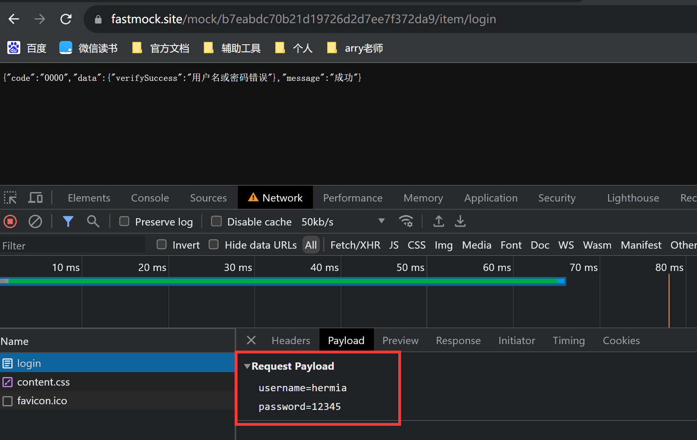
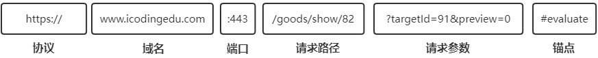

一、JSON 数据
JSON是什么 ？JSON全称是JavaScript Object Notation，即：JavaScript对象表示法JSON是Ajax发送和接收数据的一种格式JSON是一种轻量级的数据交换格式，常用来做前后端数据交互，其为字符串类型。JSON是一种语法，用来序列化对象、数组、数值、字符串、布尔值和null，但不能是undefined。
以下我们之前了解过的，都属于一种数据的格式
XMLusername=icoding&sex=male&age=19JSON
序列化 与 反序列化
- 序列化： 将对象转、数组、字符串、布尔值、null 转换成 JSON 字符串
- 反序列化（解析）： 将 JSON 字符串转换为对象、数组、字符串、布尔值、null
为什么要序列化 ？
- 其实序列化最终的目的是为了对象可以跨平台存储和进行网络传输。而我们进行跨平台存储和网络传输的方式就是
IO，而我们的IO支持的数据格式就是字节数组。 - 因为我们单方面的只把对象转成字节数组还不行，因为没有规则的字节数组我们是没办法把对象的本来面目还原回来的，所以我们必须在把对象转成字节数组的时候就制定一种规则（序列化），那么我们从
IO流里面读出数据的时候再以这种规则把对象还原回来 （反序列化）。
如果我们要把一栋房子从一个地方运输到另一个地方去，序列化就是我把房子拆成一个个的砖块放到车子里，然后留下一张房子原来结构的图纸，反序列化就是我们把房子运输到了目的地以后，根据图纸把一块块砖头还原成房子原来面目的过程
你可以理解为 JSON 是一种特殊的字符串。其特殊性在于，字符串中的内容为对象或数组，但JSON中的对象与 JS 的对象有些不一样。比如：JSON 字符串中的对象，他的属性名必需用双号号包裹，而 JS 对象中的属性名不用。
- 以下是常见的 JSON 格式数据(
data.json文件内容)
{
"status": 0,
"data": {
"id": "230000201401123540",
"username": "艾编程",
"password": "123456",
"email": "g.tkybf@lfsqxivjr.de",
"phone": 123456,
"role": 0,
"createTime": "2030-07-31 17:17:38",
"updateTime": "2035-06-30 16:12:53"
}
}
>或
{
"code": 200,
"data": [
{
"word": "javascript"
},
{
"word": "java"
},
{
"word": "json"
},
{
"word": "python"
},
{
"word": "c/c++"
},
{
"word": "node.js"
},
{
"word": "php"
}
]
}
为什么需要 JSON
前后端通信过程中需要交换数据，如果将前端 JS 的数据（对象、数组 等）直接传给后端，后端是无法解析的；后端直接传给前端的数据也是无法解析的，因为他们互相都不认识，因此就需要一种能够进行前后端通信的统一的数据格式作为中转。
而 JSON 有
3种形式，每种形式的写法都和 JS 中的数据类型很像，可以很轻松的和 JS 中的数据类型互相转换，同时后端也认识这种 JSON 类型的数据，也有对应解析 JSON 的方式，所以在前后端通信中，用 JSON 来做为传输的数据格式是非常棒的。- 前端将 JS 的数据（对象，数组等）转换成 JSON 的格式发送到后端，后端拿到对应的数据后，用对应的方法来解析 JSON，然后做相关处理。
JS（前端）-> JSON -> Java/Python/GO/PHP/Node.js（后端） - 后端向前端发送数据时，发送的也是 JSON 格式的数据，前端拿到对应的数据后，也有对应的方法来解析 JSON，然后做相关处理。
Java/Python/GO/PHP/Node.js（后端）-> JSON -> JS（前端）
- 前端将 JS 的数据（对象，数组等）转换成 JSON 的格式发送到后端，后端拿到对应的数据后，用对应的方法来解析 JSON，然后做相关处理。
JSON 的 3 种形式
JSON 有 3 种形式：简单值形式、对象形式、数组形式
- JSON 数据文件的后缀名是：
.json - JSON 中是不能写注释的
- JSON 数据文件的后缀名是：
JSON 简单值形式
- JSON 的简单值形式就对应着 JS 中的基础数据类型
- 数字、字符串、布尔值、null
注意事项 - JSON 中没有
undefined值，字符串类型的"undefined"是可以的 - JSON 中的字符串必须使用双引号，单引号会报错
应用实践
新建 后缀名为.json文件，文件中写入 JSON 简单值形式：数字、字符串、布尔值、null，进行体验和测试
JSON 对象形式
JSON 的对象形式就是对应着 JS 中的对象，但与 JS 中的对象存在以下不同点
- JSON 中对象的属性名必须用双引号，属性值如果是字符串也必须用双引号
- JSON 对象的属性值不能是
undefined,字符串类型的"undefined"是可以的
新建data.json文件，内容如下
{
"username": "艾编程",
"sex": "male",
"age": 20,
"hobby": ["篮球", "乒乓球", "足球", "书法"],
"family": {
"father": "icoding",
"mother": "美美"
}
}
- 以下 JS 变量中保存的字符串符合 JSON 格式的有
let strJson1 = '{"name":1,"age":32}'; // 正确的JSON字符串
let strJson2 = `{"name":1,"age":32}`; // 正确的JSON字符串
let strJson3 = "{'name':1,'age':32}"; // 错误的JSON字符串
let strJson4 = `{'name':1,'age':32}`; // 错误的JSON字符串
- 注意模板字符串，可以在html文件里用，不能写在JSON文件里
- JSON 数组形式
JSON 的数组形式就对应着 JS 中的数组，但也有如下区别：
- 数组中的字符串必须用双引号
- 如果数组中的成员有对象类型，则需要满足
JSON对象的格式要求。 - 不支持
undefined类型,字符串类型的"undefined"是可以的
- 新建
data.json文件，内容如下，表示简单的 JSON 数组
[1, "icoding", null];
- 新建
user.json文件，内容如下，表示相对复杂些的 JSON 数组
[
{
"id": 1,
"username": "艾编程",
"phone": "123456",
"email": "123@gmail.com",
},
{
"id": 2,
"username": "小可爱",
"phone": "18912368918",
"email": "666@gmail.com",
},
{
"id": 3,
"username": "星辰大海",
"phone": "18966668888",
"email": "888@gmail.com",
},
];
- 以下 JS 变量中保存的字符串符合 JSON 格式的有
let arrStr1 = "[1,2,3,4]"; // 正确
let arrStr2 = '[{"name":"清心"},3,4,5]'; // 正确
let arrStr3 = ' [9.1,"A",[1,3],undefined]'; // 错误
let arrStr4 = "[{'name':清心'},3,4,5]"; // 错误
- 总结：
JSON数据的注意事项JSON数据一般是保存在.json的文件中，当然其写法一定要是合法的JSON字符串，否则解析会报错。合法即以下规则：JSON中没有undefined值,字符串类型的"undefined"是可以的JSON中的字符串必须使用双引号JSON中对象的属性名必须用双引号，属性值如果是字符串也必须用双引号JSON中是不能注释的
- JSON 的常用方法
JSON 对象包含以下两个方法
方法 说明 JSON.stringify()可以将 JS 的基本数据类型、对象或者数组转换成 JSON格式的字符串JSON.parse()可以将 JSON格式的字符串解析成 JS 中的对应值
注：
除了上面两个方法，JSON这个对象本身并没有其他作用，也不能被调用或者作为构造函数调用。
- 对象与 JSON 字符串之间相互转换
const obj = {
username: "清心",
age: 33,
};
// 将对象转换为字符串 （对象序列化）
const strJson = JSON.stringify(obj);
console.log(strJson);//{"username":"清心","age":33}
console.log(typeof strJson);//string
>
// 将JSON字符串转换为对象，字符串解析
const obj2 = JSON.parse(strJson);
console.log(obj2);//{username: '清心', age: 33}
console.log(typeof obj2);//object
- 数组与 JSON 字符串之间相互转换
let arrStr = '[{"name":"清心"},3,4,5]'; // 正确
const arr = JSON.parse(arrStr);
console.log(arr);
// 将数组转成JSON字符串
const jsonStr = JSON.stringify(arr);
console.log(jsonStr);
二、原生 Ajax
Ajax 是什么
Ajax 是
Asynchronous Javascript And XML（异步 JavaScript 和 XML）的简写
- Ajax 中的异步：可以异步地向服务器发送请求，在等待响应的过程中，不会阻塞当前页面，浏览器可以做自己的事情。直到成功获取响应后，浏览器才开始处理响应数据。
- XML（可扩展标记语言）是前后端数据通信时传输数据的一种格式（早年用的多，现在都用
JSON了）- 查看博客网站地图的 xml 文件，可了解语法结构
https://www.arryblog.com/sitemap.xml- XML 现在已经很少使用了，当下比较常用的是
JSON
Ajax其实就是浏览器与服务器之间的一种异步通信方式。
Ajax主要作用
Ajax最吸引人的就是它的“异步”特性，也就是说它可以在不重新刷新页面的情况下与服务器通信，交换数据，或更新页面。
- 你可以使用
Ajax最主要的两个特性做下列事：
- 在不重新加载页面的情况下发送请求给服务器。
- 接受并使用从服务器发来的数据。
应用场景如下
以下只是列举出一些简单的常见应用，让大家对
Ajax有个初步的了解，Ajax能做的事情非常多，后面我们在项目中主要就是使手Ajax来实现前后端通信。
- 注册用户名或手机号检测，一般都会使用
Ajax异步交互- 用户名检测时会提示 “名称已被占用”
- 本质的过程是使用 Ajax 向后端发送请求，将用户名一起发送到后端，后端获取到数据后会和数据库中的数据进行比对，查看是否存在该用户名，如果存在就会响应给前端已存在，前端就会给出对应的用户提示信息。如果响应给前端为不存在，就继续注册就好。
- 搜索提示，自动补全
- 同样使用了 Ajax 向后端发送请求，后端会进行一些列的操作，最终将响应回来的数据给到前端，最后展示出来
搭建 Ajax 开发环境
Ajax需要服务器环境
- 在非服务器环境下（如本地文件直接打开的形式），浏览器无法正常使用
Ajax- 搭建服务访问就意味着浏览器地址栏访问一定是以
http或https开头的，才可以正常使用Ajax
- 使用 VSCode 搭建 Ajax 开发环境
使用 VSCode 开发，建议使用
Live Server插件，它会给我们提供一个本地的服务器环境。使用注意事项如下：- 需在当前文件的目录中打开 VSCode ，
Live Server插件才能生效。 - 在 VSCode 中，打开需要运行的文件，右键选择
"Open with Live Server"即可启动本地服务器来运行对应的文件 - 也可以使用快捷键
Ctrl + shift + p在弹窗的命令行窗口中输入Live Server会自动补全 选择Open with Live Server即可，下次再打开其他文件时，会默认出现在第一个。直接使用快捷键Ctrl + shift + p再回车 即可运行。
- 需在当前文件的目录中打开 VSCode ，
当然，VSCode 中的 Live Server 也不是强制一定要用这个
- Windows 可用 phpStudy
- Mac 可用 MAMP
- Windows 和 Mac 上也可直接用 Nginx
为了开发方便，我们选择使用 Live Server 足以，其他知道即可。
Ajax 的基本用法
XMLHttpRequest我们要使用
Ajax，但浏览器是没有直接提供类似 Ajax 这样对象的。因此Ajax想要实现浏览器与服务器之间的异步通信，就需要依靠XMLHttpRequest，它是一个构造函数。- 因为早期前后端通信的数据格式是 XML，所以
XMLHttpRequest构造函数的命名中带有XML，但本质上XMLHttpRequest在实现前后端通信时，并没有和具体的某种数据格式绑定。 - 不过我们现在前后端通信，主要使用的还是 JSON 格式的数据
Ajax 的使用步骤
- 第一步：创建 xhr 对象
const xhr = new XMLHttpRequest();
- 第二步：调用用
open()方法，准备发送
xhr.open(method, url, boolean);
//例：xhr.open(
"get",
"https://www.fastmock.site/mock/6ec78e345df340241e1f5043f0167833/icode/test"
);
- 调用 open方法并不是真正的发送请求，只是做好发送请求的准备工作
pen方法的三个参数- method：表示HTTP请求的方法，如：
GET、POST、PUT、DELETE- url: 请求的url地址（本地或远程服务器都可以）
- boolean: 是一个可选的布尔值，表示是否异步执行操作，默认为true。true表示是异步，false表示同步，但从来不会使用ajax来同步加载
- 第三步：调用
send()方法，正式发送请求
xhr.send(body);
body:是一个可选参数，用于你想发送给服务器的任何内容，主要用于发送POST请求时，发送请求体数据。如果采用的是GET请求，其参数写和不写一样，因为写了也不会被处理
- 目前常用的几种发送数据形式有以下三种
xhr.send('123') // 字符串
xhr.send("username=icoding&key=1242"); // 参数字符串
xhr.send('{"username":"icoding","key":1254}'); // JSON格式
xhr.send(new FormData()); // 发送表单数据
send()方法中发送数据的格式前后端要协商好，这样后端在接受到参数时就知道以什么格式来解析。
- 第四步：通过监听
readystatechange()事件，来处理服务器响应
xhr.onreadystatechange = function () {
// ...
};
//也可以采用 addEventListener 方式来监听事件
xhr.addEventListener("readystatechange", () => {}, false);
当获取到响应后，会触发 xhr 对象的
readystatechange事件，可以在该事件中对响应进行处理
onreadystatechange()见名知意，即：状态改变时触发事件,所以我们需要判断当前Ajax的状态。
xhr.readyState属性记录了整个通信过程中的状态，它的值从 0 ~ 4，一共 5 个状态
值 状态 描述 0 UNSENT 代理被创建，但尚未调用 open()方法。1 OPENED open()方法已经被调用。2 HEADERS_RECEIVED send()方法已经被调用，并且头部和状态已经可获得。3 LOADING 下载中， responseText属性已经包含部分数据。4 DONE 下载操作已完成。 每次状态发生改变，都会触发 readystatechange事件
xhr.onreadystatechange = function () {
// readyState 不等于 4，未完成，数据还没有准备好，就没必要继续执行，直接返回null就好
if (xhr.readyState !== 4) return;
// readyState 等于 4，表示完成，并已经接收到全部响应数据
if((xhr.status >= 200 && xhr.status < 300) || xhr.status === 304 ) {
// 请求被发送后，从服务器端返回文本。
console.log(xhr.responseText);
// 查看返回值的类型
console.log(typeof xhr.responseText);
}
}
- 使用 Ajax 完成前后端通信
通过以上四个步骤完成 Ajax 前后端通信，不过我们一般会把
xhr.onreadystatechange事件写在xhr.open()和xhr.send()代码前面，保证请求发出去后的状态一定能被事件监听到。- 完整代码
// 第一步：创建xhr对象
const xhr = new XMLHttpRequest();
// 第四步：通过监听`readystatechange()`事件，来处理服务器响应
xhr.onreadystatechange = function () {
// readyState 不等于 4，未完成，数据还没有准备好，就没必要继续执行，直接返回null就好
if (xhr.readyState !== 4) return;
// readyState 等于 4，表示完成，并已经接收到全部响应数据
if ((xhr.status >= 200 && xhr.status < 300) || xhr.status === 304) {
// 请求被发送后，从服务器端返回文本。
console.log(xhr.responseText);
// 查看返回值的类型
console.log(typeof xhr.responseText);
}
};
// 第二步：调用用open()方法，准备发送
xhr.open(
"get",
"https://www.fastmock.site/mock/6ec78e345df340241e1f5043f0167833/icode/test",
true
);
// 第三步：调用send()方法，正式发送请求
xhr.send();
Ajax 发送 GET 请求
前面了解了 Ajax 是如何发送请求的，接下来深入了解 发送 GET 请求时，如何携带数据 和 数据编码
- GET 请求不能通过请求体携带数据，但可以通过请求头携带
- URL 地址中问号后边即为携带的数据，
&符号来分隔多个名值对
const url = "http://www.xxx.com/test?keyword=json&type=1&sort=1";
// url地址？号的字符串就是GET请求体携带的数据 keyword=json&type=1&sort=1
代码演示
- 根据参数 num 来决定返回几条用户信息
- 使用
fast mock来模拟接口：https://www.fastmock.site/#/
- 接口设置
- 接口地址的结尾是：项目接口基础路径+接口地址url
const url = "https://www.fastmock.site/mock/b7eabdc70b21d19726d2d7ee7f372da9/item/user";
右边是服务端返回的
JSON数据
data里面的函数接收两个参数，_req和Mock注意：这两个变量名不能改动fastmock用query查询参数，如/user?id=1获取方式为_req.query.id
- 预览：
- 发送请求
get通过请求头携带数据，URL地址中问号后边即为携带的数据；所以我们把num写在地址后面，让请求头传到服务端，服务端根据不同的num，返回对应的数据
const url =
"https://www.fastmock.site/mock/b7eabdc70b21d19726d2d7ee7f372da9/item/user?num=3";
//第一步 创建xhr对象
const xhr = new XMLHttpRequest();
//第四步 通过监听事件，来处理服务器响应
xhr.onreadystatechange = function () {
if (xhr.readyState !== 4) return;
if (xhr.status === 200) {
console.log(xhr.responseText);
console.log(typeof xhr.responseText);
}
};
//第二步 调用open方法，准备发送
xhr.open("get", url);
//第三步 调用send方法，正式发送请求
xhr.send();
Ajax 发送 POST 请求
- POST 请求主要通过请求体携带数据，同量也可以在请求头携带（不过实际开发不这样用）
- 请求体数据作为
send()方法的参数（一般是字符串），被传送到服务器端。Ajax 发送 POST 请求，请求体携带的数据格式通常为以下两种，但不管那一种，都需要和后端沟通好，这样后端就能以对应的格式来解析数据
数据类型 格式 fastmock 接受数据形式 application/x-www-form-urlencoded “username=admin&password=123456” _req.body.username JSON JSON.stringify({username:”admin”,password:”123456”}) _req.body.username
- 和
get方法不同的是：post方法用请求体携带数据，因此：
- 要在请求头中，设置数据格式
- 用
send()方法，发送请求体数据
接口设置
- 新增接口： 右边是服务端返回的`JSON`数据
data里面的函数接收两个参数，_req和Mock注意：这两个变量名不能改动fastmock获取body请求体数据：_req.body.id- 接口地址：直接复制，不用添加内容
预览：
发送
application/x-www-form-urlencoded格式的请求
const url =
"https://www.fastmock.site/mock/b7eabdc70b21d19726d2d7ee7f372da9/item/login";
//第一步 创建xhr对象
const xhr = new XMLHttpRequest();
//第四步 通过监听事件，来处理服务器响应
xhr.onreadystatechange = function () {
if (xhr.readyState !== 4) return;
if (xhr.status === 200) {
console.log(xhr.responseText);
console.log(typeof xhr.responseText);
}
};
//第二步 调用open方法，准备发送
xhr.open("post", url);
//设置请求头，发送内容类型为application/x-www-form-urlencoded 格式
xhr.setRequestHeader("Content-Type", "application/x-www-form-urlencoded");
//第三步 调用send方法，正式发送请求
xhr.send("username=hermia&password=12345");
- JSON 格式
const url =
"https://www.fastmock.site/mock/b7eabdc70b21d19726d2d7ee7f372da9/item/login";
//第一步 创建xhr对象
const xhr = new XMLHttpRequest();
//第四步 通过监听事件，来处理服务器响应
xhr.onreadystatechange = function () {
if (xhr.readyState !== 4) return;
if (xhr.status === 200) {
console.log(xhr.responseText);
console.log(typeof xhr.responseText);
}
};
//第二步 调用open方法，准备发送
xhr.open("post", url);
//设置请求头，发送内容类型为application/x-www-form-urlencoded 格式
xhr.setRequestHeader("Content-Type", "application/json");
//第三步 调用send方法，正式发送请求
xhr.send(
JSON.stringify({
username: "hermia",
password: "12345",
})
);
- 结果和上面一样
请求数据编码
不管是GET还是POST请求，如果请求携带的数据是非英文字母的，如：中文汉字，就需要编码之后再发送给后端，不然会造成乱码问题
可以使用encodeURIComponent()方法进行编码
// GET请求地址中有中文需要编码
const url = `https://www.xxx.com/test?wd=${encodeURIComponent("web前端")}`;
// POST请求体数据中有中文需要编码
xhr.send(`username=${encodeURIComponent("艾编程")}&age=20`);
- 代码演示
const url =
"https://www.fastmock.site/mock/b7eabdc70b21d19726d2d7ee7f372da9/item/login";
//第一步 创建xhr对象
const xhr = new XMLHttpRequest();
//第四步 通过监听事件，来处理服务器响应
xhr.onreadystatechange = function () {
if (xhr.readyState !== 4) return;
if (xhr.status === 200) {
console.log(xhr.responseText);
console.log(typeof xhr.responseText);
}
};
//第二步 调用open方法，准备发送
xhr.open("post", url);
//设置请求头，发送内容类型为application/x-www-form-urlencoded 格式
xhr.setRequestHeader("Content-Type", "application/x-www-form-urlencoded");
//第三步 调用send方法，正式发送请求
xhr.send(`username=${encodeURIComponent("艾编程")}&password=12345`);
- 查看编码后传递到服务器端的中文字符串：
form表单get请求携带数据
- 不需要设置
enctype属性的值
><form
> action="https://www.fastmock.site/mock/b7eabdc70b21d19726d2d7ee7f372da9/item/login"
> method="get"
>>
> <input type="text" name="username" id="" />
> <input type="password" name="password" />
> <input type="submit" value="提交" />
></form>
- 我们可以看到，表单请求（提交）的地址，并没有参数
- 输入用户名、密码，提交之后，表单的值就会组成键值对的形式，作为参数拼接到url路径上，这个参数就是get请求所携带的数据体
form 表单 post 请求携带数据
form表单在发送post请求时，请求体数据类型有如下三种，通过enctype属性设置。
enctype 属性 说明 application/x-www-form-urlencoded 默认值，只能上传文本格式的文件。不能用于发送文件。在发送前会编码所有字符，即在发送到服务器之前，所有字符都会进行编码 multipart/form-data 指定传输数据为二进制类型（不对字符编码），比如图片，mp3，文件。是将文件以二进制的形式上传，可以实现多种类型的文件上传 text/plain 纯文本的传输，空格转换为”+”号，但不对特殊字符编码，一般用于 email 之类的
温馨提示
- form 表单只有在发送 post 请求时，需要设置 enctype 属性的值，如果不设置默认为
application/x-www-form-urlencoded表单参数
- action: 设置表单请求（提交）的地址
- method: 设置请求的方法
- enctype: 设置以post方法请求时，请求体携带的数据类型。
- 当
enctype="application/x-www-form-urlencoded"
><form
> action="https://www.fastmock.site/mock/6ec78e345df340241e1f5043f0167833/icode/login"
> method="post"
> enctype="application/x-www-form-urlencoded"
>
> <input type="text" name="username" id="" />
> <input type="password" name="password" id="" />
> <input type="submit" value="提交" />
></form>
- 在
Network里查看提交的数据格式：- 是自动将表单
name属性值和输入的内容进行拼接，作为请求体中的内容发送
- 当
enctype="text/plain"
><form
> action="https://www.fastmock.site/mock/6ec78e345df340241e1f5043f0167833/icode/login"
> method="post"
> enctype="text/plain"
>
> <input type="text" name="username" id="" />
> <input type="password" name="password" id="" />
> <input type="submit" value="提交" />
></form>
- 在
Network里查看提交的数据格式：
- 当
enctype="multipart/form-data"
><form
> action="https://www.fastmock.site/mock/6ec78e345df340241e1f5043f0167833/icode/login"
> method="post"
> enctype="multipart/form-data"
>
> <input type="text" name="username" id="" />
> <input type="password" name="password" id="" />
> <input type="submit" value="提交" />
></form>
- 在
Network里查看提交的数据格式：

利用Ajax来提交enctype = "multipart/form-data"类型的表单数据。
根据前面的演示，可以发现：
- 通过提交按扭提交表单数据时，会发生页面的跳转，如果不想发生页面跳转就需要通过
Ajax来发送请求。
思路：
- 阻止默认行为，即点击提交按钮时的默认跳转行为
- 用点击事件来发送
Ajax请求
><form method="post" id="login">
> <input type="text" name="username" id="" />
> <!-- 密码框不能自填充 -->
> <input type="password" name="password" autocomplete="off" />
> <input type="submit" value="提交" id="submit" />
></form>
><script>
const login = document.getElementById("login");
const { username, password } = login;
//获取提交按钮
const submit = document.getElementById("submit");
//添加点击事件
submit.addEventListener("click", (e) => {
e.preventDefault(); //阻止默认行为
//获取表单输入框中的数据
const _username = username.value.trim();
const _password = password.value.trim();
//输入的数据验证
//发送Ajax请求
const url =
"https://www.fastmock.site/mock/b7eabdc70b21d19726d2d7ee7f372da9/item/login";
//第一步 创建xhr对象
const xhr = new XMLHttpRequest();
//第四步 通过监听事件，来处理服务器响应
xhr.onreadystatechange = function () {
if (xhr.readyState !== 4) return;
if (xhr.status === 200) {
console.log(xhr.responseText);
}
};
//第二步 调用open方法，准备发送
xhr.open("post", url);
//设置请求头，发送内容类型为application/x-www-form-urlencoded 格式
xhr.setRequestHeader(
"Content-Type",
"application/x-www-form-urlencoded"
);
//第三步 调用send方法，正式发送请求
//拼接date数据
const date = `username=${_username}&password=${_password}`;
xhr.send(date);
});
></script>
>- 可以看到，通过`Ajax`方法发送post请求，在不跳转页面的情况下，也可以提交`enctype = "multipart/form-data"`类型的表单数据。 >- 设置请求头时，发送内容类型为`application/x-www-form-urlencoded`格式；所以提交的数据格式和`form`表单数据格式为` enctype="application/x-www-form-urlencoded"`时，提交的数据格式是相同的，都使用参数字符串格式 >- 弊端：通过请求体携带的数据是我们人为 拼接输入框中的数据，当提交的信息比较多时，就比较麻烦了注意：
- 密码框不能自填充：需要设置
autocomplete="off"- 可以通过结构赋值的方式拿到输入框：
{username, password } = login，然后用.value方法拿到输入的数据
FormData 对象
- 利用
FormData来提交表单数据从前面的学习中，可以知道：通过
Ajax来提交 Form 表单时，如果提交的数据类型为application/x-www-form-urlencoded，需要人为拼接数据FormData构造函数可以弥补这个问题- 如果提交的数据类型为
multipart/form-data类型，可以利用到FormData构造函数来创建对应类型的数据。 FormData对象会自动将表单的所有数据编译成键值对，以便用XMLHttpRequest来发送数据
- 把表单元素作为构造函数的参数，更改数据类型
- 还可以自己添加内容
><form method="post" id="login">
> <input type="text" name="username" id="" />
> <!-- 密码框不能自填充 -->
> <input type="password" name="password" autocomplete="off" />
> <input type="submit" value="提交" id="submit" />
></form>
><script>
const login = document.getElementById("login");
const { username, password } = login;
//获取提交按钮
const submit = document.getElementById("submit");
//添加点击事件
submit.addEventListener("click", (e) => {
e.preventDefault(); //阻止默认行为
//输入的数据验证
//发送Ajax请求
const url =
"https://www.fastmock.site/mock/b7eabdc70b21d19726d2d7ee7f372da9/item/login";
//第一步 创建xhr对象
const xhr = new XMLHttpRequest();
//第四步 通过监听事件，来处理服务器响应
xhr.onreadystatechange = function () {
if (xhr.readyState !== 4) return;
if ((xhr.status >= 200 && xhr.status < 300) || xhr.status === 304) {
console.log(xhr.responseText);
}
};
//第二步 调用open方法，准备发送
xhr.open("post", url);
//设置请求头，发送内容类型为multipart/form-data格式
xhr.setRequestHeader("Content-Type", "multipart/form-data");
//第三步 调用send方法，正式发送请求
//拼接date数据
const date = new FormData(login);
//而且可以添加表单中没有的内容
date.append("age", 20);
xhr.send(date);
});
></script>
- FormData 的基本用法
接下来我们来学习以下几个 FormData 的实例方法
new FormData()得到的实例是可迭代对象实例方法 说明 append(key,value) 添加一个新的值到 FormData 对象内的一个已存在的键中，如果键不存在则会添加该键 set 对 FormData 对象里的某个 key 设置一个新的值，如果该 key 不存在，则添加。 get get() 方法用于返回 FormData 对象中和指定的键关联的第一个值 getAll 方法会返回该 FormData 对象指定 key 的所有值 delete(key) 根据 key 从 FormData 对象中删除指定键
- 关于 FormData 构造函数相关的实例方法查看官方文档
append(key,value)和get(key)和getAll(key)
const data = new FormData();
data.append("a", 1);
data.append("a", 2);
data.append("a", 1);
data.append("a", 2);
for (let item of data) {
console.log(item);
}
//['a', '1']
//['a', '2']
//['a', '1']
//['a', '2']
>
console.log(data.get("a")); //1
console.log(data.getAll("a")); //['1', '2', '1', '2']
append方法可以添加相同的值get方法只能得到指定的键关联的第一个值getAll会返回由指定key的所有值组成的数组
set(key,value)
const data = new FormData();
data.set("a", 1);
data.set("a", 2);
data.set("a", 3);
data.set("b", 1);
for (let item of data) {
console.log(item);
}
//['a', '3']
//['b', '1']
>
console.log(data.get("a")); //3
console.log(data.getAll("a")); //['3']
set方法添加的键值不能相同，如果键名一样后添加的会替代前面的- 所以
get方法和getAll方法得到的值都是最后添加进去的value值
delete
const data = new FormData();
data.set("a", 1);
data.append("a", 2);
data.append("b", 3);
>
for (let item of data) {
console.log(item, "--");
}
// ['a', '1'] '--'
// ['a', '2'] '--'
// ['b', '3'] '--'
data.delete("a");
for (let item of data) {
console.log(item, "--");
}
// ['b', '3'] '--'
三、跨域
什么是跨域 ？
跨域问题其实就是浏览器的同源策略所导致的。
同源策略是一个重要的安全策略，它用于限制一个源Origin的文档或者它加载的脚本如何能与另一个源的资源进行交互。它能帮助阻隔恶意文档，减少可能被攻击的媒介
源(Origin)的定义
Web 内容的源由用于访问它的URL的 方案（协议）、主机名（域名）和 端口定义。只有当协议、主机和端口都匹配时，两个对象才具有相同的源。
什么是同域（源），什么是不同域（源）
我们观察以下 URL 地址:

只有当两个URL地址的protocol（协议）、domain（域名）、port（端口） 三者完全相同时，我们才认为他们是同域，只要三者中任何一个不同，就是不同域，与路径（参数、锚点）无关，路径是否一样无所谓
- 以下 URL 为同域
https://www.icodingedu.com/
https://www.icodingedu.com/goods/
https://www.icodingedu.com/open/course/20
https://www.icodingedu.com/goods/show/81?targetId=90&preview=0
- 以上地址的协议都是：https，域名都是：www.icodingedu.com，端口号没有写，默认都是 443
- 以下 URL 为不同域
<!-- 以下URL的 协议不同，即为不同域 -->
https://www.icodingedu.com/
http://www.icodingedu.com/
>
<!-- 以下URL的 域名不同，即为不同域 -->
http://www.icodingedu.com:80/goods/
http://m.icodingedu.com:80/goods/
>
<!-- 以下URL的 第1个和第2个的协议 端口号都不同 -->
https://www.icodingedu.com:443/goods/
http://www.icodingedu.com:80/goods/
注意事项：
- 默认情况下
http协议的默认端口号是80， 可以省略端口号https的默认端口是443，可以省略端口号- 所以以下情况为同域：
http://www.icodingedu.com:80 与 http://www.icodingedu.com 是同域
https://www.icodingedu.com:443 与 https://www.icodingedu.com 是同域
同域请求
如果请求的 URL 地址和当前 URL 地址是同域，则不会受浏览器的同源策略限制。所以服务端响应的内容前端能正常的接受到。
代码演示
- 在同一目录下，新建
index.html和data.json文件 ，在index.html页面使用Ajax异步请求data.json文件
index.html页面核心代码如下
><script>
const url = "./data.json";
const xhr = new XMLHttpRequest();
xhr.onreadystatechange = function () {
if (xhr.readyState !== 4) return;
if ((xhr.status >= 200 && xhr.status < 300) || xhr.status === 304) {
const data = xhr.responseText;
console.log(data);
console.log(typeof data);
console.log(JSON.parse(data));
}
};
xhr.open("get", url);
xhr.send();
></script>
data.json页面代码如下
{
"username": "icoding",
"age": 33
}
代码解读
- 上面的代码，相当于是在
http://127.0.0.1:5500/index.html路径下向http://127.0.0.1:5500/data.json路径发送了Ajax请求，因为两者 “协议名，域名，端口号” 三者都相同，所以是同域请求，并不受浏览器同源策略的限止。注意：Ajax发送HTTP请求的url地址可以是本地也可以是远程服务
跨域请求
如果请求的 URL 地址和当前 URL 地址是不同域，则会受浏览器的同源策略限制，即服务端响应的会被浏览器给丢弃掉。
也就是说请求发出去了，服务端也响应了内容，但是浏览器在接受到服务端的内容后，发现请求的地址和当前 URL 不是同域的，则会把内容丢弃掉
代码演示
- 在同一目录下创建
index.html和server.js两个文件server.js文件，用来创建HTTP服务器，服务器的访问地址为http://127.0.0.1:8887- 在
index.html页面使用Ajax异步请求http://127.0.0.1:8887来获取内容
index.html
><script>
const url = "http://127.0.0.1:8887";
const xhr = new XMLHttpRequest();
xhr.onreadystatechange = function () {
if (xhr.readyState !== 4) return;
if ((xhr.status >= 200 && xhr.status < 300) || xhr.status === 304) {
console.log(xhr.responseText);
}
};
xhr.open("get", url);
xhr.send();
></script>
server.js
const http = require("http");
http
.createServer((request, response) => {
console.log("请求成功");
// 设置响应头，解决中文乱码
response.writeHead(200, {
"Content-Type": "text/plain; charset=utf-8",
});
response.end("发送的数据内容");
})
.listen(8887);
>
console.log("Server running at http://127.0.0.1:8887");
运行代码：
- 先在在
VSCode的命令终端执行node server.js命令来运行node程序，创建http://127.0.0.1:8887服务- 然后在
VScode中打开index.html页面，打开后地址为：http://127.0.0.1:5500/index.html，打开后，其内部就会向http://127.0.0.1:8887发送Ajax请求。- 所以我们
VSCode的终端看到，服务端成功响应请求，并输出 “请求成功”。但浏览器端并没有在控制台正确打印服务端响应的内容，而是报如下错误
注：
- 跨域限制是浏览器的行为，它不限制请求发送到服务端，也没有限制服务端响应内容，只在服务端响应内容后，浏览器会判断当前地址和请求地址是不是同一域，如果不是，则会把响应回来的内容丢弃，并抛出相应错误。
- Ajax发送http请求的地址是本地的
http://127.0.0.1:5500；而服务器的地址是http://127.0.0.1:8887，端口号不同，所以不同域- 当然，如果后端有相关设置，跨域也是可以的，后面会讲
跨域请求为什么会被阻止
阻止跨域请求，其实是浏览器本身的一种安全策略，即：同源策略
本质上
- 跨域被阻止的问题就是浏览器本身的问题（基于安全考虑，帮我们禁止掉了），其他客户端 或 服务器 都不存在跨域被阻止的问题。
- 虽然，阻止了跨域请求保障了一定的安全，但有的时候合理的跨域请求也是至关重要的。那我们应该如何跨域请求，还不被浏览器阻止呢 ？
这就是我们接下来为什么要学习 跨域解决方案的原因了 ！
跨域常用解决方案
- CORS 跨域资源共享（最常用）
- JSONP（主要用到 script 标签）
- 代理跨域：开启一个代理服务器实现数据转发
关于跨域请求的解决方案有数十种之多，主要看应用场景，每种方式都有各自的优缺点。- 当下我们前端开发中会优先使用 CORS 跨域资源共享。
CORS 跨域资源共享
- 我们使用 CORS 跨域资源共享 主要是后端来解决的，其实我们前端什么都不用做也帮不上啥忙，只要后端解决了，前端就可以实现跨域了。
- CORS 是什么
CORS（
Cross-Origin Resource Sharing）通俗地译为跨域资源共享，定义了浏览器与服务器如何实现跨源通信。背后的基本思路是一种基于 HTTP 头的机制，该机制通过允许服务器标示除了它自己以外的其它源（域、协议或端口），使得浏览器允许这些源访问加载自己的资源。我们前面说过，因为浏览器的同源策略，所以不同域之间是不能实现资源共享。如果我们想要不同域之间能实现资源共享，我们只需要在服务端的响应头中添加
Access-Control-Allow-Origin头信息
- 允许任意的外源访问该资源
Access-Control-Allow-Origin: "*"
- 只允许指定的外源访问该资源
Access-Control-Allow-Origin: "https://www.xxx.com"
- CORS 实现资源共享
接下来我们用代码来演示，
CORS是如何解决不同域之间的资源共享。- 在同一目录下新建
index.html和server.js文件。
- 在同一目录下新建
server.js文件- 用来创建一个
HTTP服务，服务的访问地址http://127.0.0.1:8886
- 用来创建一个
const http = require("http");
http
.createServer((request, response) => {
// 设置响应头
response.writeHead(200, {
// 允许所有域访问
// "Access-Control-Allow-Origin":"*"
// 只允许http://127.0.0.1:5500 这个域名下的所有请求
"Access-Control-Allow-Origin": "http://127.0.0.1:5500",
});
// 设置响应内容
response.end("响应内容");
})
.listen(8886);
console.log("Server running at http:127.0.0.1:8886");
index.html页面- 使用
Ajax向http://127.0.0.1:8886发起一个异步的请求
- 使用
><script>
const url = "http://127.0.0.1:8886";
const xhr = new XMLHttpRequest();
xhr.onreadystatechange = function () {
if (xhr.readyState !== 4) return;
if ((xhr.status >= 200 && xhr.status < 300) || xhr.status === 304) {
console.log(xhr.response);
}
};
xhr.open("get", url);
xhr.send();
></script>
以上代码执行过程
- 首先在
VSCode的终端，执行node server.js命令来运行node程序，创建Http服务，服务地址http:127.0.0.1:8886- 然后在
VSCode中打开index.html页面，这时地址栏中的地址为http://127.0.0.1:5500,同时内部的 JS 代码执行，发起了 Ajax 请求，因为请求的地址：http:127.0.0.1:8886和http://127.0.0.1:5500不是同域的，所以就会有跨域限制，但是我们在响应头中设置了"Access-Control-Allow-Origin":"http://127.0.0.1:5500"，相当于允许http://127.0.0.1:5500来访问我的资源，所以在浏览器的控制台能成功的打印出”响应内容”。- 如果把
server.js文件中设置响应头"Access-Control-Allow-Origin":"http://127.0.0.1:5500"代码去掉，你再次启动node服务，刷新index.html页面时，你就发现浏览器的控制台就报出了错误，相当请求失败。
使用 CORS 跨域过程
- ①、浏览器发送请求
- ②、后端在响应头中添加
Access-Control-Allow-Origin头信息 - ③、浏览器接收到响应
- ④、如果是同域下的请求，浏览器不会额外做什么，这次前后端通信就圆满完成了
- ⑤、如果是跨域请求，浏览器会从响应头中查找是否允许跨域访问
- ⑥、如果允许跨域，通信圆满完成
- ⑦、如果没找到或不包含想要跨域的域名，就丢弃响应结果
如何给 CORS 设置多域名
如果想要指定多个外源能访问该资源，其需要一定的办法才能办到，同时我们还需要了解以下两个必要的知识点：
- 如果当前请求是跨域请求，则请求头中会有
Origin头字段 - 如果当前请求不是跨域请求，则请求头中不会有
Origin头字段了解了这一点，我们就知道如何：指定多个外源访问该资源
具体思路 - 在响应端获取请求头中的
Origin字段，如果没有值，则说明当前并没跨域，可以不做任何处理 - 如果请求头中带有
Orign字段，则说明当前为跨域请求，只需要将响应头Access-Control-Allow-Origin字段的值设置为请求头Orign字段的值
- 如果当前请求是跨域请求，则请求头中会有
- 具体代码实现
// 用来保存响应头信息的对象
const head = {};
// 允许访问该资源的外源
const origin = ["http://127.0.0.1:5500", "http://127.0.0.1:5501"];
// 获取请求头的origin字段中的值，只有在请求是跨域请求是，请求头中才会有该字段，并且该字段的值是发起请求时所在的地址
const requestOrigin = request.headers.origin;
// 判断origin的值是否在允许的源中，如果在，则将响应头Access-Control-Allow-Origin的值设置为该源
if (origin.includes(requestOrigin)) {
head["Access-Control-Allow-Origin"] = requestOrigin;
}
>
// 设置 Vary: Origin，避免 CDN 缓存破坏 CORS 配置
(head["Vary"] = "Origin"),
// 设置响应头
response.writeHead(200, head);
- 完整的 node 代码
const http = require("http");
http
.createServer((request, response) => {
// 用来保存响应头信息的对象
const head = {};
// 允许访问该资源的外源
const origin = ["http://127.0.0.1:5500", "http://127.0.0.1:5501"];
// 获取请求头的origin字段中的值，只有在请求是跨域请求是，请求头中才会有该字段，并且该字段的值是发起请求时所在的地址
const requestOrigin = request.headers.origin;
// 判断origin的值是否在允许的源中，如果在，则将响应头Access-Control-Allow-Origin的值设置为该源
if (origin.includes(requestOrigin)) {
head["Access-Control-Allow-Origin"] = requestOrigin;
}
// 设置 Vary: Origin，避免 CDN 缓存破坏 CORS 配置
(head["Vary"] = "Origin"),
// 设置响应头
response.writeHead(200, head);
// 设置响应内容
response.end("响应内容");
})
.listen(8886);
console.log("Server running at http:127.0.0.1:8886");
JSONP 实现跨域
JSONP的原理在浏览器中
<img> 、<link> 、<video> 、<script>等标签在跨域请求资源时不受浏览器同源策略的影响。JSONP主要就是利用<script>标签，加载跨域文件
使用 JSONP 实现跨域
为了让大家能理解 JSONP 是如何实现跨域来请求资源，我们先来从一段简单的 JS 代码开始说起
index.html页面的 JS 代码
><script>
// 处理数据的函数 data为需要处理的数据
function handle(data) {
console.log(data);
}
>
// 调用函数，并将数据作为参数传入 ，这里的操作，我们是希望服务端返回对应的JS代码来实现
handle({ userName: "icoding", password: 123456 });
></script>
- 我们希望通过
<script>标签来发起请求，返回以下JS代码，而不是我们人为写死，因为我们传入函数中的参数数据更希望后端发送给到我们。
handle({ userName: "icoding", password: 123456 });
- 改造后的
index.html页面代码如下
><script>
// 处理数据的函数 data为需要处理的数据
function handle(data) {
console.log(data);
}
></script>
<!-- 服务端通过地址中的参数 callback=handle 来判断返回的函数的名-->
><script src="http://127.0.0.1:8885/callback=handle"></script>
node.js搭建HTTP服务接下来我们来搭建
HTTP服务，让大家感受完整的处理过程。即后端拿收到http://127.0.0.1:8885/callback=handle这个请求后，会如何响应，才能实现我们想要的结果- 创建
server.js文件，用来创建HTTP服务
- 创建
const http = require("http");
http
.createServer((request, response) => {
// 获取路径 /callback=handle 中的handle
const callback = request.url.split("=")[1];
>
const data = JSON.stringify({ userName: "icoding", password: 123456 });
response.end(`${callback}(${data})`);
// 上面代码同等于
// response.end(`handle({"userName":"icoding","password":123456})`)
})
.listen(8885);
console.log("Server running at http://127.0.0.1:8885");
- 服务端根据请求地址中的参数，来确定返回的字符串中的函数名，同时把对应的数据做为函数的实参传入。前端的
<script>标签收到响应内容后，会把内容当成JS代码来编译和执行。
代码执行过程
- 首先在
VSCode的终端，执行node server.js命令来运行node程序，创建Http服务，服务地址http:127.0.0.1:8885- 然后在
VSCode中打开index.html页面，这里你在控制台就能看到函数调用执行后的结果
代理跨域
代理跨域的原理
我们前面说过，跨域请求被阻止是浏览器的行为，服务器和服务器之间是没有这种限制。
如果在浏览器访问
http:127.0.0.1:5500页面时，该页面发送Ajax请求到http://127.0.0.1:8886服务下获取资源，受到浏览器同源策略的影响，肯定会被阻止。如果我们可以在请求端和服务端之间架设一个代理服务器。这个代理服务器与请求端满足同源策略，那我们请求端就可把请求发给代理服务器，然后代理服务器帮我们把请求转发给真实的服务器，服务器响应内容给到代理服务器，代理服务器再把内容响应给到请求端。
- 这样就完美的解决了跨域问题。

- 关于代理服务器，我们后面将到 Vue 时会涉及到。这里我们就用 node 来搭建两个服务器来模拟下中间整个过程。
- 这样就完美的解决了跨域问题。
模拟代理跨域的实现过程
- 创建
a.js，来创建 HTTP 服务器，服务地址http:127.0.0.1:8881 - 创建
b.js，来创建 HTTP 服务，服务地址http:127.0.0.1:8882在这个服务器中返回一个index.html页面，这个返回的页面需要发送Ajax请求，获取服务器http:127.0.0.1:8881的响应结果。因为受到浏览器同源策略的限制，所以请求肯定会失败。
- 创建
我们模拟代理来实现
我们把请求转发给
http:127.0.0.1:8882/userInfo这个服务器，然后这个服务器就相当于是一个代理服务器，他再发送请求到http:127.0.0.1:8881，拿到响应结果后，返回给到浏览器端。

- 新建
index.html网页
><body>
a.js创建的服务器返回的html内容渲染后页面
> <script>
// 需要获取http:127.0.0.1:8881 服务器响应的内容，因为受到同源策略的限制，所以我们需要把请求发送给到http://127.0.0.1:8882/getInfo,他会在接受到请求后，将请求转发给到http:127.0.0.1:8881，然后拿到响应的结果，返回给到浏览器端。
const url = "http://127.0.0.1:8882/getInfo";
const xhr = new XMLHttpRequest();
xhr.onreadystatechange = function () {
if (xhr.readyState !== 4) return;
if ((xhr.status >= 200 && xhr.status < 300) || xhr.status === 304) {
console.log(xhr.response);
}
};
xhr.open("get", url);
xhr.send();
> </script>
></body>
- 新建
a.js创建HTTP服务器，服务地址http:127.0.0.1:8881
const http = require("http");
const fs = require("fs");
http
.createServer((request, response) => {
response.writeHead(200, {
"Content-Type": "text/plain;charset=utf-8",
});
// 发送请求到另一台服务器（目标服务器来获取内容）
response.end("目标服务器返回的内容");
})
.listen(8881);
console.log("Server running at http:127.0.0.1:8881");
- 新建
b.js，创建 HTTP 服务器，服务地址http:127.0.0.1:8882- 首先，这个地址返回
index.html页面 - 然后，
index.html页面发送Ajax请求到http://127.0.0.1:8882/getInfo；因为index.html是b.js这个服务器返回的，所以他俩是同域的 - 这个
http://127.0.0.1:8882/getInfo服务器收到请求后，会发送请求到目标服务器http://127.0.0.1:8881获取响应内容，然后将获取到的内容响应到浏览器端
- 首先，这个地址返回
const http = require("http");
const fs = require("fs");
// 需要 npm install axios命令在当前目录下安装axios包
const axios = require("axios");
>
http
.createServer((request, response) => {
// 获以url路径
if (request.url === "/") {
// 读取文件内容
const html = fs.readFileSync("./index.html");
response.writeHead(200, {
"Content-Type": "text/html;charset=utf-8",
});
response.end(html);
} else {
// 发送请求到另一台服务器（目标服务器来获取内容）
axios.get("http://127.0.0.1:8881").then((res) => {
// 将目标服务器响应的内容作为响应内容返回
response.end(res.data);
});
}
})
.listen(8882);
console.log("Server running at http:127.0.0.1:8882");
四、XHR 对象的属性
responseType、esponseText、response属性属性 描述 responseType 属性值是一个枚举字符串值，用于指定响应中包含的数据类型。其常用的类型有： text、json。 如果没有指定，则默认值为text文本类型response 用于返回响应的正文，返回的类型为 responseType指定的类型esponseText 用来返回响应的正文，其接受的内容为文本形式。所以只有在没有设置 responseType或者responseType = ""或"text"的时候才能使用
提示：
- 通过上面的了解，我们应该知道
response完全可以替代responseText，关于responseType的更多类型，可查看 MDN 官方文档
代码演示
如果
xhr.responseType='json'，则xhr.response的返回值是经过json解析后的js对象。
- 所以如果返回内容不是
json格式的，则返回值为null
server.js创建 HTTP 服务
const http = require("http");
http
.createServer((request, response) => {
response.writeHead(200, {
"Content-Type": "text/plain;charset=utf-8",
"Access-Control-Allow-Origin": "*",
});
>
response.end(`{"username":"icoding","age":12}`);
// response.end('abc');
})
.listen(8885);
console.log("Server running at http://127.0.0.1:8885");
index.html文件
const url = "http://127.0.0.1:8885";
const xhr = new XMLHttpRequest();
xhr.onreadystatechange = function () {
if (xhr.readyState !== 4) return;
if ((xhr.status >= 200 && xhr.status < 300) || xhr.status === 304) {
console.log(xhr.response); // 如果服务端响应内容不符合JSON格式,则最后的结果为null
}
};
// 指定接受过来的响应的数据类型，如果为json字符串，则收到的值为json解析后的js对象
xhr.responseType = "json";
xhr.open("get", url);
xhr.send();
timeout属性timeout的值是 是一个无符号长整型数（正整数），代表着一个请求在被自动终止前所消耗的毫秒数。也就是说在规定时间内请求发出去还没有响应，则取消请求。
xhr.timeout = 10; // 超时时间为10ms
timeout的默认值为 0，意味着没有超时（不设置 timeout 属性，就没有超时一说）timeout一般在调用open()方法之后且在调用send()方法之前设置。timeout属性常于**timeout事件**结合使用，在超时后，就会触发timeout事件，我们可以在timeout事件中来做相关处理
const url =
"https://www.fastmock.site/mock/6ec78e345df340241e1f5043f0167833/icode/test";
const xhr = new XMLHttpRequest();
xhr.onreadystatechange = function () {
if (xhr.readyState !== 4) return;
if ((xhr.status >= 200 && xhr.status < 300) || xhr.status === 304) {
console.log(xhr.response);
}
};
xhr.ontimeout = function () {
console.log("timeout");
};
xhr.open("get", url);
xhr.timeout = 1000; // 请求超过1s还没响应，则取消请求
xhr.send();
- withCredentials 属性
withCredentials属性：指定**Ajax跨域**请求是要不要携带cookie等。
使用
Ajax发送请求，默认情况下：
- 同域时，会携带 Cookie
- 跨域时，不会携带Cookie
同时需要设置
xhr.withCredentials = true;，但最终能否成功跨域携带 Cookie 还要看服务器是否同意，服务器端默认是不同意的。
- 如果在同域请求时，设置
xhr.withCredentials=true;会抛出错误- 如果需要成功携带 Cookie 服务端还需要以下两个设置。
服务端的设置
- 服务端必需要设置Access-Control-Allow-Origin，告诉浏览器允许跨域，而且这个值必须指定域名，不能设置为 *
- 在响应头中，Access-Control-Allow-Credentials这个值也要设置为true
代码演示
- 新建
index.html页面，代码如下
const url =
"https://www.fastmock.site/mock/6ec78e345df340241e1f5043f0167833/icode/users/login";
const xhr = new XMLHttpRequest();
xhr.onreadystatechange = function () {
if (xhr.readyState !== 4) return;
if ((xhr.status >= 200 && xhr.status < 300) || xhr.status === 304) {
console.log(xhr.responseText);
}
};
>
xhr.open("post", url);
xhr.setRequestHeader("Content-Type", "application/json");
//允许Ajax跨域请求时携带Cookie，如果把这里去掉，则请求时，请求头中没有Cookie信息
xhr.withCredentials = true;
xhr.send(JSON.stringify({ username: "admin", password: "123456" }));
温馨提示：
在测试这个功能时，建议使用
Firfox（火狐）浏览器，因为Chrome 80版本以上的浏览器中仍然在请求头中没有携带Cookie。原因在于Chrome 80以后SameSite的默认值为Lax，导致跨域Cookie传输收到限制，在此之前默认值为none。
- 此处内容为后端人员需要解决的，所以不讲解（网上也有现成的答案，有兴趣自已了解）
五、XHR 对象的方法
- abort() 方法
- 如果该请求已被发出，
XMLHttpRequest.abort()方法将终止该请求 - 需要
send()方法发送请求完之后再调用abort()方法 abort()方法一般与**abort事件**一起配合使用
- 如果该请求已被发出，
const url =
"https://www.fastmock.site/mock/6ec78e345df340241e1f5043f0167833/icode/test";
const xhr = new XMLHttpRequest();
xhr.onreadystatechange = function () {
if (xhr.readyState !== 4) return;
if ((xhr.status >= 200 && xhr.status < 300) || xhr.status === 304) {
console.log(xhr.response);
}
};
// abort事件，在调用abort方法时，触发
xhr.onabort = function () {
console.log("abort");
};
xhr.open("get", url);
xhr.send();
>
// 需要在发送完请求之后来调用 abort() 方法，即：发送完请求后，立马就取消了
// abort() 方法用来终止当前请求
// 请完成后，马上又终止了请求
xhr.abort();
- setRequestHeader 方法
XMLHttpRequest.setRequestHeader()是设置HTTP请求头部的方法。- 此方法必须在
open()方法和send()之间调用。
语法
- 此方法必须在
// header 属性的名称 value属性的值
xhr.setRequestHeader(header, value);
- 为了安全起见，大部分的请求头我们是没办法设置的，具体查阅官方文档
我们学习
setRequestHeader()主要是为了设置Content-Type的属性值，在请求中，Content-Type主要是告诉服务器实际发送的数据类型，其值为MIME类型。
const url =
"https://www.fastmock.site/mock/6ec78e345df340241e1f5043f0167833/icode/users/login";
const xhr = new XMLHttpRequest();
xhr.onreadystatechange = function () {
if (xhr.readyState !== 4) return;
if ((xhr.status >= 200 && xhr.status < 300) || xhr.status === 304) {
console.log(xhr.response);
}
};
>
xhr.open("post", url);
>/*
> 前后端通信时，需要协商好发送的数据类型（参数），默认不设置"Content-Type"属性时，其值为"text/plain"类型。但是响应端https://www.fastmock.site/.....是以JSON格式来处理接受的参数，所以不设置就会造成数据出错，拿不到结果。
>*/
xhr.setRequestHeader("Content-Type", "application/json");
const data = {
username: "admin",
password: "123456",
};
xhr.send(JSON.stringify(data));
六、XHR 对象的事件
XHR 常用的事件有
事件 说明 loadstart 当调用send()函数，发出请求时触发 load 当请求完成（成功）时触发 loadend 请求结束时触发，无论请求成功 ( load) 还是失败 (abort) 或 (error) error 当请求或网络错误时触发 timeout 当请求超时时触发 abort 当调用 abort 方 法，终止请求时触发 progress 当服务器响应数据时开始周期性触发
注：
- 对任何请求，浏览器只会触发
load、timeout、abort、error事件中的一个
更多事件可 查阅官方文档
- load、loadstart、loadend 事件
load事件：用于响应数据成功时触发，相当于readyState === 4时，才会触发。- 所以我们可以用
load事件代替readystatechange监听事件，处理响应。
- 所以我们可以用
const url =
"https://www.fastmock.site/mock/6ec78e345df340241e1f5043f0167833/icode/test";
const xhr = new XMLHttpRequest();
// xhr.onreadystatechange = function () {
// if (xhr.readyState !== 4) return;
// if((xhr.status >= 200 && xhr.status < 300) || xhr.status === 304 ) {
// console.log(xhr.response);
// }
// };
>
// 用onload代替onreadystatechange,代码如下
xhr.onload = function () {
if ((xhr.status >= 200 && xhr.status < 300) || xhr.status === 304) {
console.log(xhr.response);
}
};
xhr.open("get", url);
xhr.send();
- 对比 load、loadstart、loadend 事件
const url =
"https://www.fastmock.site/mock/6ec78e345df340241e1f5043f0167833/icode/test";
const xhr = new XMLHttpRequest();
// 当调用send()函数，发出请求时触发
xhr.onloadstart = function () {
console.log("loadstart");
};
// 当请求完成（成功）时触发
xhr.onload = function () {
console.log("load");
};
// 请求结束时触发，无论请求成功 (load) 还是失败 (abort) 或 (error)
xhr.onloadend = function () {
console.log("loadend");
};
>
xhr.open("get", url);
xhr.send();
//loadstart
//load
//loadend
- error 事件
error 事件：请求发生错误时触发
// url地址中的site，错写成了sit
const url =
"https://www.fastmock.sit/mock/6ec78e345df340241e1f5043f0167833/icode/test";
const xhr = new XMLHttpRequest();
// 当调用send()函数，发出请求时触发
xhr.onloadstart = function () {
console.log("loadstart");
};
// 当请求完成（成功）时触发
xhr.onload = function () {
console.log("load");
};
// 请求结束时触发，无论请求成功 (load) 还是失败 (abort) 或 (error)
xhr.onloadend = function () {
console.log("loadend");
};
// 请求发生错误时触发，比如上面的url地址错误
xhr.onerror = function () {
console.log("error");
};
>
xhr.open("get", url);
xhr.send();
//loadstart
//error
//loadend
- abort 事件
abort 事件：调用 abort() 终止请求时触发
const url =
"https://www.fastmock.site/mock/6ec78e345df340241e1f5043f0167833/icode/test";
const xhr = new XMLHttpRequest();
xhr.addEventListener("load", () => {
if ((xhr.status >= 200 && xhr.status < 300) || xhr.status === 304) {
console.log(xhr.response);
}
});
// 当调用abort方法终止请求时触发
xhr.addEventListener("abort", () => {
console.log("abort");
});
xhr.open("get", url);
xhr.send();
// 调用 abort() 方法终止请求
xhr.abort();
- timeout 事件
timeout 事件：当请求超时后触发
const url =
"https://www.fastmock.site/mock/6ec78e345df340241e1f5043f0167833/icode/test";
const xhr = new XMLHttpRequest();
xhr.onreadystatechange = function () {
if (xhr.readyState !== 4) return;
if ((xhr.status >= 200 && xhr.status < 300) || xhr.status === 304) {
console.log(xhr.response);
}
};
xhr.ontimeout = function () {
console.log("timeout");
};
xhr.open("get", url);
xhr.timeout = 1000; // 请求超过1s还没响应，则取消请求
xhr.send();
- progress 事件
progress 事件会在请求接收到数据的时候被周期性触发。
- 在 progress 事件的事件对象（Event）上存在以下三个重要的属性，可以用来显示资源的下载进度，用
e.属性名的方式调用。
- 在 progress 事件的事件对象（Event）上存在以下三个重要的属性，可以用来显示资源的下载进度，用
| 属性 | 描述 |
|---|---|
| lengthComputable | 只读属性，是一个布尔值；表示底层流程将需要完成的总工作量和已经完成的工作量是否可以计算。换句话说，它告诉我们进度是否可以被测量 |
| loaded | 只读属性，是一个正整数，表示底层流程已经执行的工作总量 |
| total | 只读属性，是一个正整数，表示正在执行的底层流程的工作总量。（需要在响应头中携带Content-Length字段，total相当于是读取这个字段的信息 |
代码演示
在请求资源时，最好弄一张大的图片，以免因为加载内容太小而看不到效果。同时在控制台把网速调慢和禁用缓存，否则直接从缓存读取或网速过快，也看不到进度效果。
// 请求地址
const url = "./bg.jpg";
// 创建xhr对象
const xhr = new XMLHttpRequest();
// 响应成功的操作
xhr.onload = function () {
// 成功相关的操作可以自己设置
};
// 数据响应过程中的进度情况
xhr.onprogress = function (e) {
// 如果进度可以被测量
if (e.lengthComputable) {
// 获取当前已执行的工作总量
const loaded = e.loaded;
// 获取响应数据的工作总量
const total = e.total;
// 计算当前的工作进程（百分比）
console.log("图片加载进度:", ((loaded / total) * 100).toFixed(0) + "%");
}
};
// 准备发送
xhr.open("get", url);
// 正式发送
xhr.send();
- 案例：显示图片加载进度
- 页面布局
><style>
html,
body {
width: 100%;
height: 100%;
margin: 0;
padding: 0;
}
body {
display: flex;
justify-content: center;
align-items: center;
}
.progress {
width: 80%;
height: 50px;
}
.progress .progress-bar {
width: 0%;
height: 50px;
background-color: red;
text-align: center;
line-height: 50px;
color: #fff;
transition: all 0.2;
}
></style>
><body>
> <div class="progress">
> <div class="progress-bar"></div>
> </div>
></body>
- JS实现加载进度条
let progressEl = document.querySelector(".progress");
// 获取DOM元素
let bar = document.querySelector(".progress-bar");
>
// 请求地址
const url = "./bg.jpg";
// 创建xhr对象
const xhr = new XMLHttpRequest();
// 响应成功的操作
xhr.onload = function () {
// 读取响应过来的数据
let blob = xhr.response;
// 根据blob创建对象的URL
let src = window.URL.createObjectURL(blob);
// 创建图片标签
let img = document.createElement("img");
// 给图片添加地址
img.src = src;
// 将图片添加到页面中
document.body.appendChild(img);
// 将进度掉隐藏
if (progressEl) {
document.body.removeChild(progressEl);
progressEl = null;
bar = null;
}
};
// 数据响应过程中的进度情况
xhr.onprogress = function (e) {
// 如果进度可以被测量
if (e.lengthComputable) {
// 获取当前已执行的工作总量
const loaded = e.loaded;
// 获取响应数据的工作总量
const total = e.total;
// 计算当前的工作进程（百分比）
let progress = ((loaded / total) * 100).toFixed(0);
bar.style.width = progress + "%";
bar.innerText = progress + "%";
}
};
// 将接受的数据类型设置为blob,一个包含二进制数据的 Blob 对象
xhr.responseType = "blob";
// 准备发送
xhr.open("get", url);
// 正式发送
xhr.send();
xhr.response接收到的是二进制数据，需要两步：
- 将XHR对象的属性
responseType设置为"blob"- 用静态方法
window.URL.createObjectURL(xhr.response)将二进制数据转化成blob格式的URL
七、Ajax 的简单封装
- Promise 简单封装 Ajax
利用 Promise 来简单封装下 Ajax 请求，关于更完善更复杂的封装后面再讲。
>/**
> * @param method 表示请求的方法，如get或post
> * @param url 请求的地址
> * @param body 如果为post请求，传入的请求体数据，需要传入JSON格式
> */
function ajax(method, url, body = null) {
// 返回Promise对象
return new Promise((resolve, reject) => {
const xhr = new XMLHttpRequest();
xhr.addEventListener("load", () => {
if ((xhr.status >= 200 && xhr.status < 300) || xhr.status === 304) {
resolve(xhr.response);
} else {
reject("请求失败");
}
});
// 响应过来的数据类型为json格式才接受
xhr.responseType = "json";
xhr.open(method, url);
xhr.setRequestHeader("Content-Type", "application/json"); // 发送JSON格式数据
xhr.send(body);
});
}
>
export default ajax;
注意：
- 我们设置了响应过来的数据类型为json格式，所以使用
post方法的时候，.send()里面的数据要用JSON.stringify()处理
- Ajax继发
><script type="module">
import ajax from "./ajax.js";
ajax(
"get",
"https://www.fastmock.site/mock/b7eabdc70b21d19726d2d7ee7f372da9/item/user?num=2"
)
.then((data) => {
console.log(data);
return ajax(
"post",
"https://www.fastmock.site/mock/b7eabdc70b21d19726d2d7ee7f372da9/item/login",
JSON.stringify({ username: "hermia", password: 12345 })
);
})
.then((data) => {
console.log(data);
});
></script>
- Ajax并发
><script type="module">
import ajax from "./ajax.js";
ajax(
"get",
"https://www.fastmock.site/mock/b7eabdc70b21d19726d2d7ee7f372da9/item/user?num=2"
).then((data) => {
console.log(data);
});
ajax(
"post",
"https://www.fastmock.site/mock/b7eabdc70b21d19726d2d7ee7f372da9/item/login",
JSON.stringify({ username: "hermia", password: "12345" })
).then((data) => {
console.log(data);
});
></script>
- Ajax 并发问题
利用 Promise.all 来处理多个 Ajax 并发的问题
- 实现：两个Ajax并发后，拿到结果，再继发一条Ajax请求
- 相关伪代码如下：
const p1=ajax(method,url);
const p2=ajax(method,url)
>
const p=Promise.all([p1,p2]);
p.then([data1,data2]=>{
console.log(data1)
console.log(data2)
})
>
// 以上针对情况是在需要拿到p1和p2的结果后，才能做后续相关操作
- 代码处理
><script type="module">
import ajax from "./ajax.js";
const p1 = ajax(
"get",
"https://www.fastmock.site/mock/b7eabdc70b21d19726d2d7ee7f372da9/item/user?num=2"
);
const p2 = ajax(
"post",
"https://www.fastmock.site/mock/b7eabdc70b21d19726d2d7ee7f372da9/item/login",
JSON.stringify({ username: "hermia", password: "12345" })
);
Promise.all([p1, p2])
.then((data) => {
console.log(data); //由p1,p2的data组成的数组 [{…}, {…}]
return ajax(
"get",
"https://www.fastmock.site/mock/b7eabdc70b21d19726d2d7ee7f372da9/item/user?num=3"
);
})
.then((data) => {
console.log(data); //{code: '0000', message: '成功', data: '成功返回三条数据'}
});
></script>
八、Ajax 的实践与应用
案例1：搜索自动补全
- 实现思路
- 给输入框绑定
input事件,然后在事件中判断文本框输入的内容。如果内容不为空，则把输入的内容作为查询的参数拼接到请求的url地址上，然后利用Ajax向后端发送get请求。 - 根据后端返回的数据来创建
DOM，并插入到页面中。
- 给输入框绑定
><style>
> .search {
> display: flex;
> height: 200px;
> flex-direction: column;
> align-items: center;
> }
> .search-input {
> width: 400px;
> height: 40px;
> }
></style>
>
><div class="search">
> <div><input type="text" name="" class="search-input" /></div>
> <ul class="list">
> <li>111</li>
> </ul>
></div>
>
><script type="module">
// 导入模块
import ajax from "./ajax.js";
// 获取DOM
const list = document.querySelector(".list");
const searchInput = document.querySelector(".search-input");
// 请求地址
let url =
"https://www.fastmock.site/mock/6ec78e345df340241e1f5043f0167833/icode/search/keyword";
// 监听文本框input输入事件
searchInput.oninput = function () {
// 获取内容，并去除字符串前后的空格
let value = this.value.trim();
// 如果输入内容不为空，则发起Ajax请求
if (value) {
// 将搜索的参数拼接在url后面，发送到服务端
let newUrl = `${url}?keyword=${value}`;
ajax("get", newUrl).then((res) => {
let data = res.data;
// 根据返回的数据，创建DOM，添加到页面中
render(data);
});
} else {
list.innerHTML = "";
}
};
>
// 根据请求的数据创建DOM，添加到页面
function render(data) {
let html = "";
list.innerHTML = ""; // 重新赋值前，先将原来的内容清空
for (let { keyword } of data) {
html += `<li>${keyword}</li>`;
}
list.innerHTML = html;
}
></script>
- 优化
- 如果想要降低请求的频率，可以结合之间讲的防抖函数，在规定的时间内再次触发
input事件，则重新计时。
>/**
> * debounce 防抖函数
> * @param fn 事件处理函数
> * @param delay 延迟时间
> */
function debounce(fn, delay = 200) {
var timer = null;
// 以下是每次需要执行的代码
return function () {
if (timer) clearTimeout(timer);
// 开启定时器
timer = setTimeout(() => {
fn.apply(this, arguments);
timer = null; // 这里很多人有争议，要不要置空
}, delay);
};
}
- 如果上一次请求没有响应回来前，又触发了事件，则把上一次请求取消，重新发送请求
- 关注以下代码
--------------------------------部分内容
- 关注以下代码
import ajax from "./ajax.js";
// 获取输入框
const searchInput = document.querySelector(".search-input");
// 获取ul列表
const list = document.querySelector(".list");
// 请求地址
let url =
"https://www.fastmock.site/mock/6ec78e345df340241e1f5043f0167833/icode/search/keyword";
>
//---------------------------------
let xhr = null; // 保证xhr对象
let done = false; // 当前没有请求
// --------------------------------
>
// 给输入框添加input事件
searchInput.oninput = function () {
// 获取输入框中内容，并去掉前后的空格
let value = this.value.trim();
>
// --------------------------------
if (done) {
xhr.abort();
}
done = true; // 当前有请求
// --------------------------------
>
// 如果输入框中的内容不为空，把对应内容作为参数拼接到URL后面，发送到服务端
if (value) {
let newUrl = `${url}?keyword=${value}`;
xhr = new XMLHttpRequest();
// 监听事件
xhr.addEventListener("load", () => {
if ((xhr.status >= 200 && xhr.status < 300) || xhr.status === 304) {
// 响应成功
// --------------------------------
done = false; // 请求响应回来，标识目前没有请求
// --------------------------------
render(xhr.response.data);
} else {
// 响应失败
}
});
// 统一响过来的数据只是JSON类型，并把他转换成JS对象返回
xhr.responseType = "json";
xhr.open("get", newUrl);
xhr.send();
} else {
list.innerHTML = "";
}
};
>
// 用来渲染DOM
function render(data) {
let html = "";
for (let { keyword } of data) {
html += `<li>${keyword}</li>`;
}
list.innerHTML = html;
}
案例2：动态加载二级菜单
- HTML、CSS 布局
><style>
html,
body,
ul {
margin: 0;
padding: 0;
list-style: none;
}
.menu {
width: 200px;
margin-left: 300px;
margin-top: 100px;
border: 1px solid #ddd;
position: relative;
}
.menu ul li {
padding-left: 20px;
height: 50px;
line-height: 50px;
cursor: pointer;
}
.menu ul li:hover {
background-color: tomato;
color: #fff;
}
.menu ul li:hover .content {
display: block;
}
.menu .content {
width: 200px;
min-height: 250px;
position: absolute;
left: 200px;
top: 0;
background-color: #ddd;
display: none;
padding: 0 10px;
}
.menu .content p {
display: flex;
align-items: center;
}
.menu .content p img {
width: 50px;
margin-right: 10px;
}
.menu .content p a {
text-decoration: none;
color: #000;
}
></style>
><body>
> <div class="menu">
<!-- <ul>
<li data-id="" data-done="">
一级菜单
<div class="content">
加载二级菜单前
<img src="./loading-balls.svg" alt="" />
加载后
<p>
<img src="" alt="" />
<a href=""></a>
</p>
</div>
</li>
<li>一级2</li>
<li>一级3</li>
<li>一级4</li>
<li>一级5</li>
</ul> -->
> </div>
></body>
- JS 实现原理
第一步：实现一级菜单
- 利用 Ajax 加载一级菜单数据，然后利用数据渲染出一级菜单。
- 一级菜单
<li>标签身上有两个自定义属性，分别为data-id和data-done - 发送Ajax请求，得到数据后，构建dom，将
category_id作为li标签的属性，title作为一级菜单的内容data-id用来保存一级菜单的栏目id，后面根据这个id来确定需要获取的二级菜单数据data-done属性值为true表示Ajax请求加载过数据，不需要再次发送请求。如果没有这个属性则表示没有加载过数据，需要发送Ajax请求来加载二级菜单数据
第二步：实现动态显示二级菜单
- 当利用事件代理来处理，当滑动到li时，先获取
data-done属性，如果没有这个属性，则获取li身上的data-id属性，来发送Ajax请求。 - 如果没有
data-done属性，则说明之前发送 Ajax 请求到了数据，不需要再发送Ajax请求。 - 将一级菜单的
id拼接在url后面，发送Ajax请求；读取数据来构建dom，productImg作为img元素的src，productName作为a标签的内容 - 发送Ajax请求后，说明已经加载过了，所以给li添加自定义属性
data-done=true注意：这两步请求是继发的
><script type="module">
// 导入模块
import ajax from "./ajax.js";
// 获取DOM节点（菜单）
const menuEl = document.querySelector(".menu");
// 发送Ajax加载一级菜单
const url =
"https://www.fastmock.site/mock/6ec78e345df340241e1f5043f0167833/icode/menu";
ajax("get", url)
.then((res) => {
// Ajax加载成功的数据
let data = res.data;
// 拼接html
let html = "<ul>";
// for...of遍历
for (let item of data) {
html += `<li data-id=${item["category_id"]}>${item.title}
<div class="content">
<img src="./loading-svg/loading-bars.svg" alt="" />
</div>
</li>`;
}
html += "</ul>";
menuEl.innerHTML = html;
})
// 处理鼠标滑上一级菜单，显示对应二级菜单
.then(() => {
// 利用事件委托
menuEl.addEventListener("mouseover", (e) => {
const target = e.target;
const tagName = target.tagName.toLowerCase();
let url =
"https://www.fastmock.site/mock/6ec78e345df340241e1f5043f0167833/icode/menu/";
if (tagName === "li") {
// 判断li身上是的data-done是否为true，如果为true表示已经加载过了，不再发ajax请求
if (!target.dataset.done) {
// 把数据做为参数传过去
let newUrl = url + `${e.target.dataset.id}`;
// 发起Ajax请求
ajax("get", newUrl).then((res) => {
// 添加自定义属性 data-done=true
target.dataset.done = true;
// 读取Ajax加载的数据，来构建DOM
let data = res.data;
const conEl = target.querySelector(".content");
let html = "";
// for...of遍历
for (let { productName, productImg } of data) {
html += `<p>
<img src="${productImg}" />
<a href="">${productName}</a>
</p>`;
}
conEl.innerHTML = html;
});
}
}
});
});
></script>
案例3：GET 请求实现搜索课程
- 在
index.html页面的表单搜索关键词跳转到表单的action设置的url链接- 由于表单的
method方式是get，所以在页面跳转时，搜索框里输入的关键词会自动以?关键词的形式被添加到新的url地址后面，如果关键词是中文，会自动进行编码- 在新页面发送Ajax请求，关键词作为Ajax请求的url地址后缀
url?keyword=关键词
index.html页面- 创建 form 表单，然后选择 get 方式发送请求
<!--
action：表单提交后，发送请求的地址,请求发送到search.html搜索页
method:表示请求的方式，是以get方式发送请求
-->
><form action="./search.html" method="get">
> <input type="text" name="keyword" />
> <input type="submit" value="搜索" />
></form>
注：
- 搜索框的input标签中一定要添加 name 属性，表单中的数据才能以键值对的形式自动出现在提交的地址栏中。
- 因为搜索按扭的内容不需要出现在地址栏中，所以不用加 name 属性
- 新建
search.html页面，用来显示搜索到的课程- 先获取地址栏中传过来的
keyword = xxx参数，然后根据这个参数，再一次发送Ajax请求，向后端请求数据，拿到数据，开始根据数据创建DOM插入到页面。
- 先获取地址栏中传过来的
// 导入模块
import ajax from "./ajax.js";
// 获取传递过来的keyword参数对应的值
let url = window.location.search;
const keyword = url.split("=")[1];
// 发送Ajax请求
let newUrl =
"https://www.fastmock.site/mock/6ec78e345df340241e1f5043f0167833/icode/search";
ajax("get", `${newUrl}?keyword=${keyword}`).then((res) => {
console.log(res.data);
render(res.data);
});
>
//方式1：
function render(data) {
// 我们可以将所有内容先添加到文档碎片
const fragment = document.createDocumentFragment();
// for(let item of data){
const div = document.createElement("div");
const h3 = document.createElement("h3");
const p = document.createElement("p");
const img = document.createElement("img");
>
h3.innerText = data.courseName;
p.innerText = data.desc;
img.src = data.imageUrl;
>
div.appendChild(img);
div.appendChild(h3);
div.appendChild(p);
>
fragment.appendChild(div);
}
>
//方式2：
function render(data) {
let html = "<div>";
for (let { courseName, desc, imageUrl } of data) {
html += `
<img src="${imageUrl}"/>
<h3>${courseName}
<p>${desc}
`;
}
html += "</ul>";
document.body.innerHTML = html;
}
九、Axios
Axios 是什么
- axios 是一个基于
Promise的 HTTP 库，可以用在浏览器 和node.js中 - 可理解为 axios 是一个第三方
Ajax库，这个库是基于Promise的 - axios 的官方文档地址Axios Docs
- axios 是一个基于
axios 的基本用法
- axios 是一个第三方库，所以我们需要引入这个库才能使用。最简单的方式就是通过
<script>标签来引入对应的axios.js文件来使用。
- axios 是一个第三方库，所以我们需要引入这个库才能使用。最简单的方式就是通过
<script src="https://cdn.jsdelivr.net/npm/axios/dist/axios.min.js"></script>
- 为了提高文件的加载速度，我们使用
CDN加速服务，[网址] (https://www.bootcdn.cn/)，在搜索框输入`axios`，找到对应的引入地址，进入
<script src="https://cdn.bootcdn.net/ajax/libs/axios/1.3.4/axios.min.js"></script>
- axios 的基本用法
- axios参数
- url:请求的URL
- config:为可选项,请求相关的配置信息
- axios参数
const p=axios(config);
const p=axios(url[,config]);
axios函数的返回值是一个Promise对象，所以可以通过then()方法来接受响应数据
><script src="https://cdn.bootcdn.net/ajax/libs/axios/1.3.4/axios.min.js"></script>
><script>
// 查看axios
console.log(axios);
// 基本用法
axios(url, config).then((response) => {
// response 响应相关的数据都在这个对象上
});
></script>
- 使用 axios 来发送 get 请求
如果axios只传一个参数，这个参数是一个
url，则默认为 get 请求，其它相关参数会采用默认配置
const url =
"https://www.fastmock.site/mock/6ec78e345df340241e1f5043f0167833/icode/test";
// 发送ajax请求
axios(url).then((response) => {
// response 响应相关的信息都在response对象上
// 可以打印response,了解这个对象身上的相关属性和方法
console.log(response);
if (response.status === 200) {
console.log(response.data.data);
}
});
- config 请求配置
config为axios 创建请求时可用的配置选项，相关的配置项可能参考官方地址- 以下列出第几个常用的来作为讲解
axios({
// url是用于请求的服务器URL，如果第一个参数为url，这里可以不写
url: "https://www.fastmock.site/mock/6ec78e345df340241e1f5043f0167833/icode/users/list",
// 请求的方法
method: "post",
// 自定义请求头
headers: { "Content-Type": "application/json" },
// 通过请求头携带的数据,主要与get方法结合
params: {
num: 3,
},
// 请求体被发送的数据，主要与'PUT', 'POST', 'DELETE 和 'PATCH' 请求方法
data: {
username: "admin",
password: "123456",
},
// 请求超时的毫秒数,默认值 0 （永不超时）
timeout: 1000,
// 表示跨域请求时是否需要使用凭证（是否携带Cookie) 默认值false
withCredentials: false,
// 表示浏览器将要响应的数据类型，默认值 json
responseType: "json",
// 浏览器专属 onUploadProgress 允许为上传处理进度事件
onUploadProgress: function (progressEvent) {
// 处理原生进度事件
},
// onDownloadProgress 允许为下载处理进度事件
// 浏览器专属
onDownloadProgress: function (progressEvent) {
// 处理原生进度事件
},
// `validateStatus` 定义了对于给定的 HTTP状态码是 resolve 还是 reject promise。
// 如果 `validateStatus` 返回 `true` (或者设置为 `null` 或 `undefined`)，
// 则promise 将会 resolved，否则是 rejected。
validateStatus: function (status) {
return status >= 200 && status < 300; // 默认值
},
}).then((res) => {});
get请求
><script src="https://cdn.bootcdn.net/ajax/libs/axios/1.3.4/axios.min.js"></script>
><script>
axios({
// url是用于请求的服务器URL，如果第一个参数为url，这里可以不写
url: "https://www.fastmock.site/mock/6ec78e345df340241e1f5043f0167833/icode/users/list",
// url: "./bg.jpg",
// 请求的方法
method: "get",
// 通过请求头携带的数据,主要与get方法结合
params: {
num: 3,
},
// 请求超时的毫秒数,默认值 0 （永不超时）
timeout: 5000,
// 表示跨域请求时是否需要使用凭证（是否携带Cookie) 默认值false
withCredentials: true,
// 表示浏览器将要响应的数据类型，默认值 json
responseType: "json",
>
// onDownloadProgress 允许为下载处理进度事件
// 浏览器专属
onDownloadProgress: function (progressEvent) {
// 处理原生进度事件
const e = progressEvent.event;
if (e.lengthComputable) {
console.log("当前下载量:", e.loaded);
console.log("总下载量", e.total);
}
},
}).then((res) => {
console.log(res.data);
});
></script>
- post 请求
><script src="https://cdn.bootcdn.net/ajax/libs/axios/1.3.4/axios.min.js"></script>
><script>
axios({
// url是用于请求的服务器URL，如果第一个参数为url，这里可以不写
url: "https://www.fastmock.site/mock/6ec78e345df340241e1f5043f0167833/icode/users/login",
// url: "./bg.jpg",
// 设置请求头，请求发送的数据类型
headers: {
"Content-Type": "application/json",
},
// 请求的方法
method: "post",
// 请求体被发送的数据，主要与'PUT', 'POST', 'DELETE 和 'PATCH' 请求方法
data: {
username: "admin",
password: "123456",
},
// 表示跨域请求时是否需要使用凭证（是否携带Cookie) 默认值false
withCredentials: true,
// 表示浏览器将要响应的数据类型，默认值 json
responseType: "json",
}).then((res) => {
console.log(res.data);
});
></script>
- response 响应对象
当请求响应回来后，相关信息保存在 response 响应对象中，响应对象的相关信息如下
{
// `data` 由服务器提供的响应
data: {},
>
// `status` 来自服务器响应的 HTTP 状态码
status: 200,
>
// `statusText` 来自服务器响应的 HTTP 状态信息
statusText: 'OK',
>
// `headers` 是服务器响应头
// 所有的 header 名称都是小写，而且可以使用方括号语法访问
// 例如: `response.headers['content-type']`
headers: {},
>
// `config` 是 `axios` 请求的配置信息
config: {},
>
// `request` 是生成此响应的请求
// 在node.js中它是最后一个ClientRequest实例 (in redirects)，
// 在浏览器中则是 XMLHttpRequest 实例
request: {}
}
- 使用别名方式请求
为了方便起见，已经为所有支持的请求方法提供了别名。
axios.request(config)axios.get(url[, config])axios.delete(url[, config])axios.head(url[, config])axios.options(url[, config])axios.post(url[, data[, config]])axios.put(url[, data[, config]])axios.patch(url[, data[, config]])在使用别名方法时
url、method、data这些属性都不必在配置中指定。
axios 是别人封装好的，已经是非常成熟了，我们未来企业项目开发中也会经常用到。我们前面自己的封装的 Ajax 主要是为了学习使用，还有很多特殊情况没有考虑到，一般在实际开发中也不会真正使用。在实际开发中就使用 axios 这样成熟的库即可。
><script src="https://cdn.bootcdn.net/ajax/libs/axios/1.3.4/axios.min.js"></script>
><script>
axios
.post(
"https://www.fastmock.site/mock/6ec78e345df340241e1f5043f0167833/icode/users/login",
{
username: "admin",
password: "123456",
},
{
headers: {
"Content-Type": "application/json",
},
// 表示跨域请求时是否需要使用凭证（是否携带Cookie) 默认值false
// withCredentials: true,
// 表示浏览器将要响应的数据类型，默认值 json
responseType: "json",
}
)
.then((res) => {
console.log(res.data);
});
></script>
十、Fetch
Fetch是什么- 与
Ajax类似，Fetch也是前后端通信的一种方式。Fetch要比Ajax年轻一些 Fetch被称为下一代Ajax技术（用来替代XMLHttpRequest），内部是采用Promise的方式来处理数据。API语法简洁明了，比XMLHttpRequest更加简单易用- 采用了模块化设计，
API分散于多个对象中（如：Response对象，Request对象、Header对象） - 通过数据流（
Stream对象）处理数据，可以分块读取，有利于提高网站性能，对于大文件或者网速慢的场景极为有用。
- 与
兼容性
- 关于兼容性也可以使用：查询
Fetch 缺点- Fetch 的兼容性没有 Ajax 好
- Fetch 原生没有提供
abort终止请求方式、timeout请求超时方式，如果需要用到这些时，需要自己来实现。
- Fetch 的基本用法
全局的 fetch() 方法用于发起获取资源的请求。
- 它返回一个 promise，这个 promise 会在请求响应成功时被 resolve，并传回 Response对象。
- 失败时会被 reject，并传回TypeError
// fetch 是一个全局函数，是真实存在的
console.log(fetch);
// ajax 是不存在的
console.log(ajax);
- 语法
- p 为Promise对象,通过then方法可以接受响应后的response对象
- url :获取资源的URL
- options: 配置对象，包括所有对请求的设置
- response：是一个Response类型的对象，呈现了对一次请求的响应数据
const p = fetch(url, options).then((response) => {
// 处理响应回来的数据
});
- 利用 fetch 发送 get 请求
- 如果fetch()只接受一个url字符串参数，则表示向该网址发送 get 请求，请求返回一个 Promise 对象
- 能过 Promise 的 then 方法可以得到一个 response 对象，对象的
status属性获取返回响应的状态码，通过这个状态码可以知道响应是成功还是失败。 - 调用 response 对象身上的特定方法可以获取到响应回来的数据，如
response.json()方法
// 发送Ajax请求，请求方式 get
fetch(
"https://www.fastmock.site/mock/6ec78e345df340241e1f5043f0167833/icode/test"
)
.then((res) => {
// res 为response对象，res.status 返回响应的状态码
if (res.status === 200) {
// res.json() 是一个异步操作 返回响应的数据（一个被解析为JSON格式的Promise对象）
return res.json();
} else {
// 抛出错误
throw new Error("请求错误");
}
})
.then((data) => {
// 拿到返回的JSON数据
console.log(data);
})
.catch((err) => {
// 捕获错误信息
console.log(err);
});
- response 对象
关于 fetch 方法发起请求响应成功后，promise 对象返回的 response 对象的相关属性和方法可以查阅官方文档
- 以下是常用到的一些属性和方法
属性 说明 status 只读属性包含响应的状态代码，如成功为 200 body body 是一个可读的流，只能读取一次，读过之后就不让再读了 bodyUsed 表示 response 对象是否读取过 body 流，默认值为 false，如果读取过就变为 true
- 以下是常用到的一些属性和方法
| 方法 | 说明 |
|---|---|
| json | 接收一个 Response 流，并将其读取完成。它返回一个 Promise，Promise 的解析 resolve 结果是将文本体解析为 JSON |
fetch(
"https://www.fastmock.site/mock/6ec78e345df340241e1f5043f0167833/icode/test"
)
.then((res) => {
if (res.status === 200) {
console.log(res.bodyUsed);
console.log(res.json()); // 因为body流只能读一次，所以这里读了，后面就没法读
console.log(res.bodyUsed);
return res.json();
}
})
.then((data) => {
console.log(data); // 这里拿不到数据
});
- Fecth 的参数配置
属性 说明 method 请求使用的方法，如 GET、POST、PUT 等 body 请求的 body(请求体) 信息，GET 方法不包含 body 信息 headers 请求的头信息，形式为 Headers的对象或包含 ByteString值的对象字面量 mode 请求的模式，如 cors、no-cors 或者 same-origin； cors：跨域请求，且要求后端需要设置 cors 响应头；no-cors：允许跨域，但服务端不设置 cors 响应头，如果图片、脚本、样式；same-origin：同源请求，限制了不能跨域credentials 请求是否携带 Cookie，有三个值：omit、same-origin、include； omit：缺省值，默认为该值same-origin:同源, 表示同域请求才发送 cookie；include：跨域请求中需要带有 cookie 时；与 Ajax 的 withCredentials 属性一样，设置跨域请求时是否允许携带 Cookie 等，同是后端也要做相关设置
><script>
const url =
"https://www.fastmock.site/mock/6ec78e345df340241e1f5043f0167833/icode/users/login";
>
fetch(url, {
// 请求使用的方法，如 `GET`、`POST`、`PUT` 等
method: "post",
// post请求体携带数据，不传递就是 null,可以是键值对、JSON、FormData
body: "username=admin&password=123456",
// 请求的头信息
headers: {
// Form格式
"Content-Type": "application/x-www-form-urlencoded",
// JSON格式
// "Content-Type": "application/json",
},
// 请求的模式：跨域资源共享，默认值：cors 默认支持跨域
mode: "cors",
// 是否携带Cookie
credentials: "include",
})
.then((res) => {
if (res.status === 200) {
return res.json();
} else {
throw new Error("请求出错");
}
})
.then((data) => {
console.log(data);
})
.catch((err) => {
console.log(err);
});
></script>
测试题
- 下列选项中，描述错误的是 ？(单选)
- A、JSON.stringify()的作用是将 JavaScript 中的对象转换为 JSON 字符串
- B、JSON.stringify()方法让 localStorage/sessionStorage 可以存储对象
- C、JSON.parse()作用是将字符串转为一个对象
- D、JSON.stringify()方法可以判断两个数组或对象中的值是否相等
答案：C
- C项应该是将JSON字符串转为一个对象
- 注意选项D，
JSON.stringify()方法可以判断两个数组或对象中的值是否相等
- 下列描述正确的选项是 ？
- A、responseType 属性值为空时，不可以使用 response 属性接收
- B、responseType 属性值为 json 时，不可以使用 responseText 属性接收
- C、responseType 属性值为 text 时，只能使用 responseText 属性接收
- D、没有设置 responseType 属性时，可以使用 responseText 或 response 属性接收
答案：BD
responseType 、esponseText、 response 属性之间的关系 responseType：指定响应中包含的数据类型，如果没有指定，则默认值为 text 文本类型response用于返回响应的正文，返回的类型为responseType指定的类型esponseText用来返回响应的正文，其接受的内容只能为文本形式text所以在没有设置
responseType或者responseType为text时，用esponseText、 response都可以；